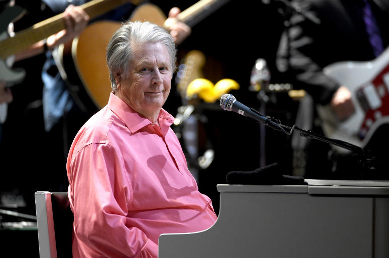

Brian Wilson
Musician, singer, songwriter, and record producer who co-founded the Beach Boys.

Brain Wilson performs Pet Sounds at the Pantages Theatre on May 26, 2017
- Brian Wilson (1988)
- I Just Wasn't Made for These Times (1995)
- Orange Crate Art (1995) (with Van Dyke Parks)
- Imagination (1998)
- Gettin' in Over My Head (2004)
- Brian Wilson Presents Smile (2004)
- What I Really Want for Christmas (2005)
- That Lucky Old Sun (2008)
- Brian Wilson Reimagines Gershwin (2010)
- In the Key of Disney (2011)
- No Pier Pressure (2015)
Brian Wilson discography:
Studio album: